Métodos de Monte Carlo em inferência estatística
Testes de hipótese de Monte Carlo
Fernando P. Mayer
1 Introdução
Nível descritivo
- Em geral, \(\alpha\) é pré-fixado para construir a regra de decisão.
- Uma alternativa é deixar em aberto a escolha de \(\alpha\) para quem for tomar a decisão.
- A ideia é calcular, supondo que a hipóese nula é verdadeira, a probabilidade de se obter estimativas mais extremas do que aquela fornecida pela amostra.
- Essa probabilidade é chamada de nível descritivo, denotada por \(\alpha^*\) (ou \(P\)-valor).
- Valores pequenos de \(\alpha^*\) evidenciam que a hipótese nula é falsa.
- O conceito de “pequeno” fica para quem decide qual \(\alpha\) deve usar para comparar com \(\alpha^*\).
Para testes unilaterais, sendo \(H_0: \mu = \mu_0\), a expressão de \(\alpha^*\) depende da hipótese alternativa:
\[\begin{align*} \alpha^* &= P(\bar{X} < \bar{x}_{obs} \, | \, H_0 \text{ verdadeira}) \quad \text{para } H_a: \mu < \mu_0 \\ \alpha^* &= P(\bar{X} > \bar{x}_{obs} \, | \, H_0 \text{ verdadeira}) \quad \text{para } H_a: \mu > \mu_0 \end{align*}\]
Para testes bilaterais, temos \(H_0: \mu = \mu_0\) contra \(H_0: \mu \neq \mu_0\), a definição do nível descritivo depende da relação entre \(\bar{x}_{obs}\) e \(\mu_0\):
\[\begin{align*} \alpha^* &= 2 \times P(\bar{X} < \bar{x}_{obs} \, | \, H_0 \text{ verdadeira}) \quad \text{se } \bar{x}_{obs} < \mu_0 \\ \alpha^* &= 2 \times P(\bar{X} > \bar{x}_{obs} \, | \, H_0 \text{ verdadeira}) \quad \text{se } \bar{x}_{obs} > \mu_0 \\ \end{align*}\]
Como estamos calculando a probabilidade para apenas uma das caudas, então esse valor é multiplicado por 2.
1.1 TH para a média
## Com variancia conhecida ---------------------------------------------
set.seed(2019-10-29)
n <- 300
x <- rnorm(n, 10, 1)
hist(x)
(med <- mean(x))
# [1] 10.02135
(s2 <- var(x))
# [1] 1.122788
t.test(x = x, alternative = "two.sided", mu = 10)
#
# One Sample t-test
#
# data: x
# t = 0.34905, df = 299, p-value = 0.7273
# alternative hypothesis: true mean is not equal to 10
# 95 percent confidence interval:
# 9.900962 10.141746
# sample estimates:
# mean of x
# 10.02135
mu0 <- 10
(zcalc <- (med - mu0)/sqrt(1/n))
# [1] 0.3698622
(zcrit <- qnorm(.025, mean = 0, sd = 1))
# [1] -1.959964
pnorm(zcalc, mean = 0, sd = 1, lower.tail = FALSE)
# [1] 0.3557426
2 * pnorm(zcalc, mean = 0, sd = 1, lower.tail = FALSE)
# [1] 0.7114852
t.test(x = x, alternative = "two.sided", mu = 10)
#
# One Sample t-test
#
# data: x
# t = 0.34905, df = 299, p-value = 0.7273
# alternative hypothesis: true mean is not equal to 10
# 95 percent confidence interval:
# 9.900962 10.141746
# sample estimates:
# mean of x
# 10.02135
calc.med <- function(x) {
mean(x)
}
N <- 10000
am <- replicate(N, calc.med(rnorm(n, 10, 1)))
## am <- rnorm(N, mean = mu0, sd = 1/sqrt(n))
hist(am)
abline(v = med, col = 2)
2 * sum(am >= med)/N
# [1] 0.7154
2 * sum(am > med)/N
# [1] 0.7154
## Padroniza a distribuição das propoções amostrais
tt <- (am - mu0)/sqrt(1/n)
hist(tt, freq = FALSE)
abline(v = zcalc, col = 2)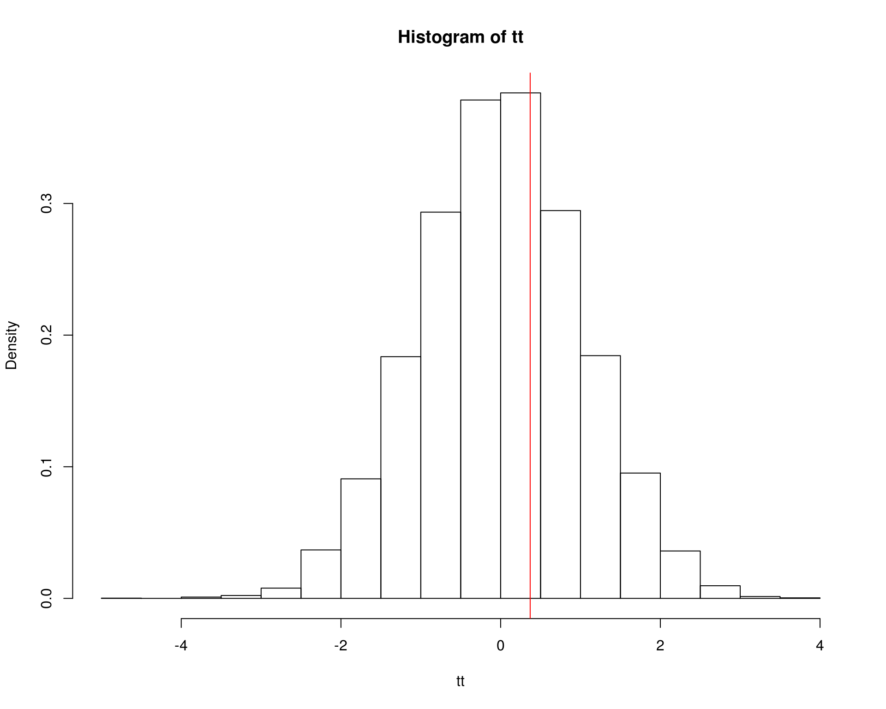
## Proporcao da amostra abaixo de theta0 ~ "p-valor"
2 * sum(tt >= zcalc)/N
# [1] 0.7154
## COm variancia desconhecida ------------------------------------------
set.seed(2019-10-29)
n <- 30
x <- rnorm(n, 10, 1)
hist(x)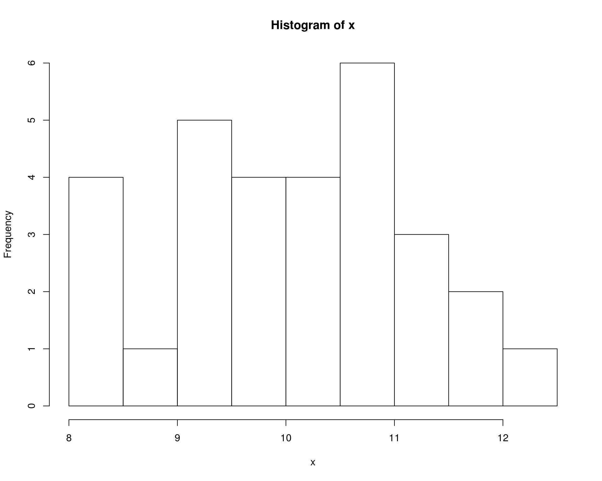
(med <- mean(x))
# [1] 10.08421
(s2 <- var(x))
# [1] 1.158774
t.test(x = x, alternative = "two.sided", mu = 10)
#
# One Sample t-test
#
# data: x
# t = 0.42846, df = 29, p-value = 0.6715
# alternative hypothesis: true mean is not equal to 10
# 95 percent confidence interval:
# 9.68225 10.48617
# sample estimates:
# mean of x
# 10.08421
mu0 <- 10
(tcalc <- (med - mu0)/sqrt(s2/n))
# [1] 0.4284624
(tcrit <- qt(.025, df = n - 1))
# [1] -2.04523
2 * pt(tcalc, df = n - 1, lower.tail = FALSE)
# [1] 0.6714802
N <- 10000
am <- replicate(N, calc.med(rnorm(n, 10, sqrt(s2))))
## am <- rnorm(N, mean = mu0, sd = sqrt(s2/n))
hist(am)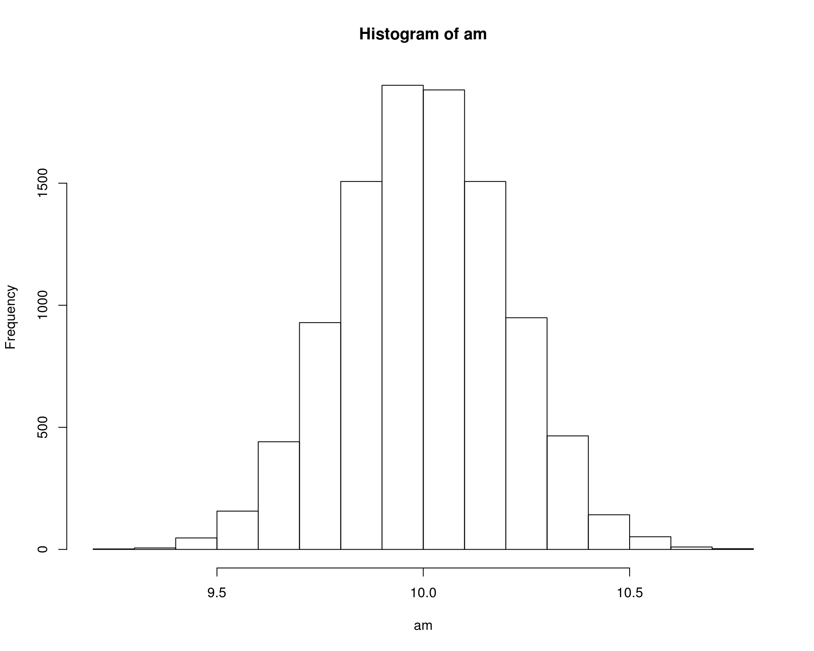
2 * sum(am >= med)/N
# [1] 0.6816
## Padroniza a distribuição das propoções amostrais
tt <- (am - mu0)/sqrt(s2/n)
hist(tt, freq = FALSE)
abline(v = tcalc, col = 2)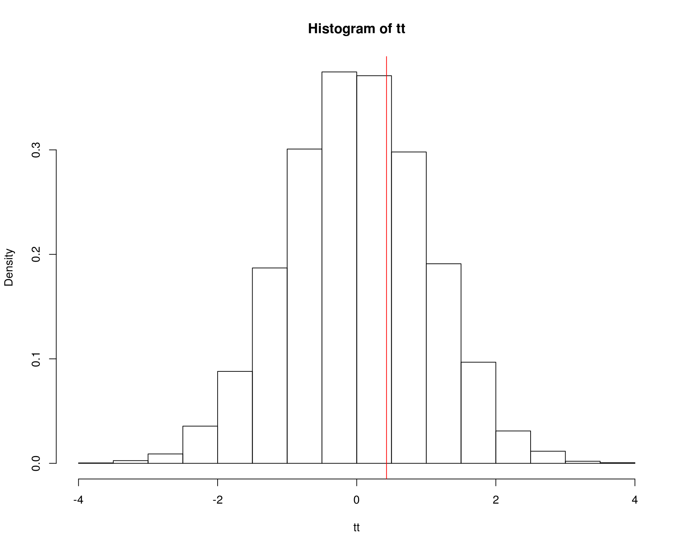
1.2 Comparação de duas médias
## Comparacao de duas medias - exemplo do Manly
machos <- c(120, 107, 110, 116, 114, 111, 113, 117, 114, 112)
femeas <- c(110, 111, 107, 108, 110, 105, 107, 106, 111, 111)
da <- data.frame(comp = c(machos, femeas),
sexo = c(rep("M", 10), rep("F", 10)))
densityplot(~comp, groups = sexo, data = da, auto.key = TRUE)
tapply(da$comp, da$sexo, mean)
# F M
# 108.6 113.4
diff(tapply(da$comp, da$sexo, mean))
# M
# 4.8
sd(machos)
# [1] 3.717825
(m1 <- mean(machos))
# [1] 113.4
(m2 <- mean(femeas))
# [1] 108.6
(med.amostral <- m1 - m2)
# [1] 4.8
n1 <- length(machos)
v1 <- var(machos)
n2 <- length(femeas)
v2 <- var(femeas)
(s.pond <- sqrt(((n1 - 1) * v1 + (n2 - 1) * v2)/(n1 + n2 - 2)))
# [1] 3.080404
t.test(x = machos, y = femeas, alternative = "greater",
var.equal = TRUE)
#
# Two Sample t-test
#
# data: machos and femeas
# t = 3.4843, df = 18, p-value = 0.001324
# alternative hypothesis: true difference in means is greater than 0
# 95 percent confidence interval:
# 2.411156 Inf
# sample estimates:
# mean of x mean of y
# 113.4 108.6
mu0 <- 0
(tcalc <- (m1 - m2)/(s.pond * sqrt(1/n1 + 1/n2)))
# [1] 3.484324
(tcrit <- qt(.025, df = n1 + n2 - 2, lower.tail = FALSE))
# [1] 2.100922
pt(tcalc, df = n1 + n2 - 2, lower.tail = FALSE)
# [1] 0.001323634
N <- 10000
## Usando a distribuicao amostral
am <- replicate(N, rnorm(1, 0, s.pond * sqrt(1/n1 + 1/n2)))
## Usando media dos machos
am <- replicate(N, diff(tapply(rnorm(20, m1, s.pond), da$sexo, mean)))
## Usando media das femeas
am <- replicate(N, diff(tapply(rnorm(20, m2, s.pond), da$sexo, mean)))
hist(am)
abline(v = med.amostral, col = 2)
format(sum(am >= med.amostral)/N, sci = FALSE)
# [1] "0.0001"
## Padroniza a distribuição das propoções amostrais
tt <- (am - mu0)/(s.pond * sqrt(1/n1 + 1/n2))
hist(tt, freq = FALSE)
abline(v = tcalc, col = 2)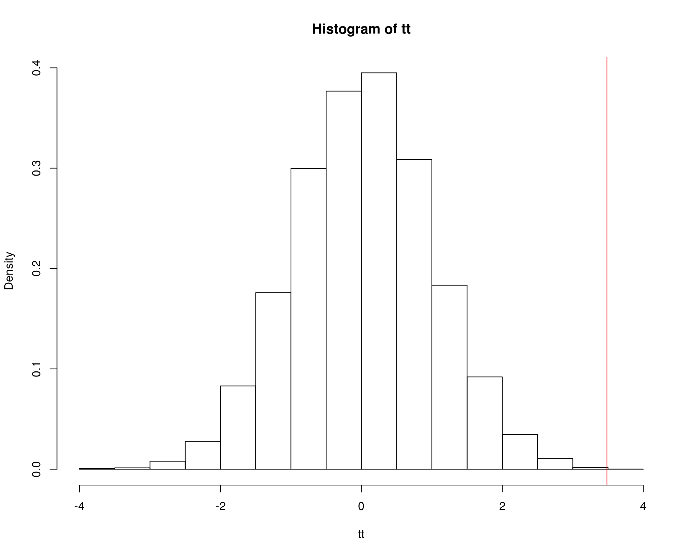
## Proporcao da amostra abaixo de theta0 ~ "p-valor"
sum(tt >= tcalc)/N
# [1] 1e-04
##----------------------------------------------------------------------
## Exemplo onde a diferenca nao eh tao grande
## Comparacao de duas medias - exemplo do Manly
set.seed(2)
machos <- c(120, 107, 110, 116, 114, 111, 113, 117, 114, 112)
femeas <- rnorm(10, mean(machos) - 2, sd = sd(machos))
da <- data.frame(comp = c(machos, femeas),
sexo = c(rep("M", 10), rep("F", 10)))
densityplot(~comp, groups = sexo, data = da, auto.key = TRUE)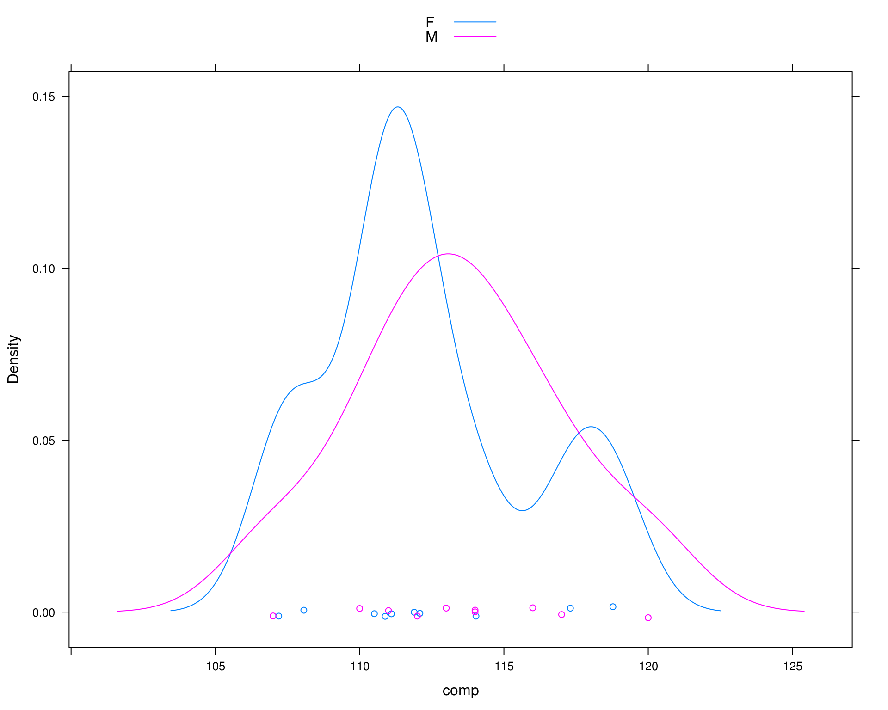
tapply(da$comp, da$sexo, mean)
# F M
# 112.185 113.400
diff(tapply(da$comp, da$sexo, mean))
# M
# 1.214975
(m1 <- mean(machos))
# [1] 113.4
(m2 <- mean(femeas))
# [1] 112.185
(med.amostral <- m1 - m2)
# [1] 1.214975
n1 <- length(machos)
v1 <- var(machos)
n2 <- length(femeas)
v2 <- var(femeas)
(s.pond <- sqrt(((n1 - 1) * v1 + (n2 - 1) * v2)/(n1 + n2 - 2)))
# [1] 3.690024
t.test(x = machos, y = femeas, alternative = "greater",
var.equal = TRUE)
#
# Two Sample t-test
#
# data: machos and femeas
# t = 0.73625, df = 18, p-value = 0.2355
# alternative hypothesis: true difference in means is greater than 0
# 95 percent confidence interval:
# -1.646627 Inf
# sample estimates:
# mean of x mean of y
# 113.400 112.185
t.test(x = machos, y = femeas, alternative = "greater",
var.equal = TRUE)$statistic
# t
# 0.7362465
mu0 <- 0
(tcalc <- (m1 - m2)/(s.pond * sqrt(1/n1 + 1/n2)))
# [1] 0.7362465
(tcrit <- qt(.025, df = n1 + n2 - 2, lower.tail = FALSE))
# [1] 2.100922
pt(tcalc, df = n1 + n2 - 2, lower.tail = FALSE)
# [1] 0.2355338
N <- 10000
am <- replicate(N, rnorm(1, 0, s.pond * sqrt(1/n1 + 1/n2)))
## Usando media dos machos
am <- replicate(N, diff(tapply(rnorm(20, m1, s.pond), da$sexo, mean)))
## Usando media das femeas
am <- replicate(N, diff(tapply(rnorm(20, m2, s.pond), da$sexo, mean)))
hist(am)
abline(v = med.amostral, col = 2)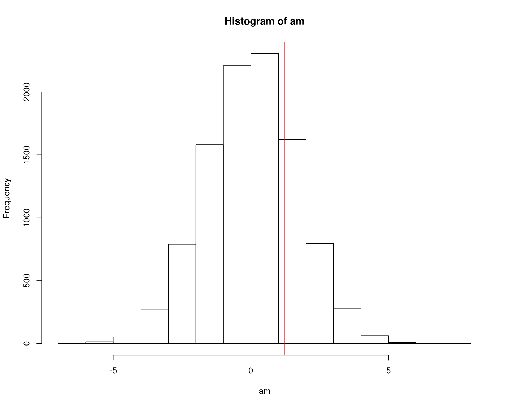
sum(am >= med.amostral)/N
# [1] 0.2361
## Padroniza a distribuição das propoções amostrais
tt <- (am - mu0)/(s.pond * sqrt(1/n1 + 1/n2))
hist(tt, freq = FALSE)
abline(v = tcalc, col = 2)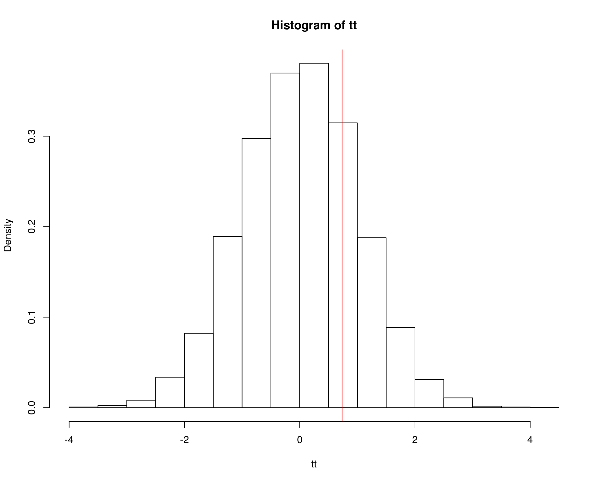
## Proporcao da amostra abaixo de theta0 ~ "p-valor"
sum(tt >= tcalc)/N
# [1] 0.2361
##----------------------------------------------------------------------
## Exemplo do Walmes
set.seed(4)
da <- data.frame(local=gl(2, 30, labels=c("N","S")))
da$bico <- with(da, rnorm(length(local),
mean=49+2*as.integer(local),
sd=2))
densityplot(~bico, groups = local, data = da, auto.key = TRUE)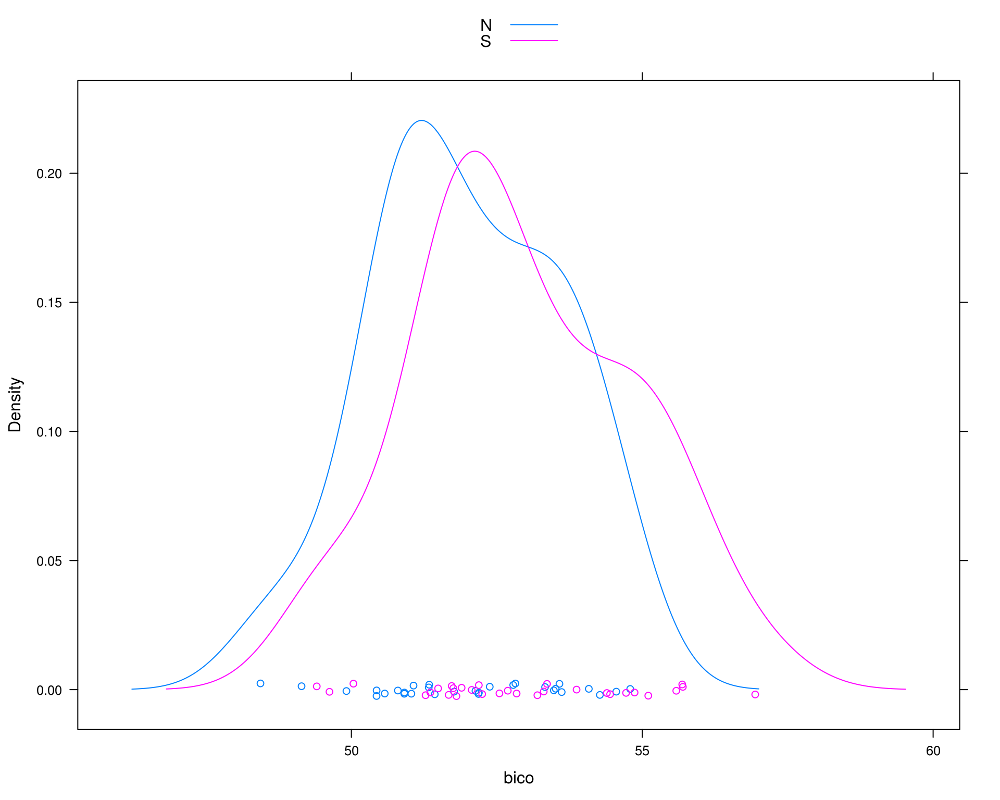
tapply(da$bico, da$local, mean)
# N S
# 51.97437 52.92697
diff(tapply(da$bico, da$local, mean))
# S
# 0.9525919
(m1 <- mean(da$bico[da$local == "N"]))
# [1] 51.97437
(m2 <- mean(da$bico[da$local == "S"]))
# [1] 52.92697
(med.amostral <- m1 - m2)
# [1] -0.9525919
n1 <- length(da$bico[da$local == "N"])
v1 <- var(da$bico[da$local == "N"])
n2 <- length(da$bico[da$local == "S"])
v2 <- var(da$bico[da$local == "S"])
(s.pond <- sqrt(((n1 - 1) * v1 + (n2 - 1) * v2)/(n1 + n2 - 2)))
# [1] 1.757892
t.test(bico ~ local, data = da, alternative = "less",
var.equal = TRUE)
#
# Two Sample t-test
#
# data: bico by local
# t = -2.0987, df = 58, p-value = 0.0201
# alternative hypothesis: true difference in means is less than 0
# 95 percent confidence interval:
# -Inf -0.1938978
# sample estimates:
# mean in group N mean in group S
# 51.97437 52.92697
mu0 <- 0
(tcalc <- (m1 - m2)/(s.pond * sqrt(1/n1 + 1/n2)))
# [1] -2.098748
(tcrit <- qt(.025, df = n1 + n2 - 2, lower.tail = TRUE))
# [1] -2.001717
pt(tcalc, df = n1 + n2 - 2, lower.tail = TRUE)
# [1] 0.02010167
N <- 10000
am <- replicate(N, rnorm(1, 0, s.pond * sqrt(1/n1 + 1/n2)))
## Usando media dos machos
am <- replicate(N, diff(tapply(rnorm(60, m1, s.pond), da$local, mean)))
## Usando media das femeas
am <- replicate(N, diff(tapply(rnorm(60, m2, s.pond), da$local, mean)))
hist(am)
abline(v = med.amostral, col = 2)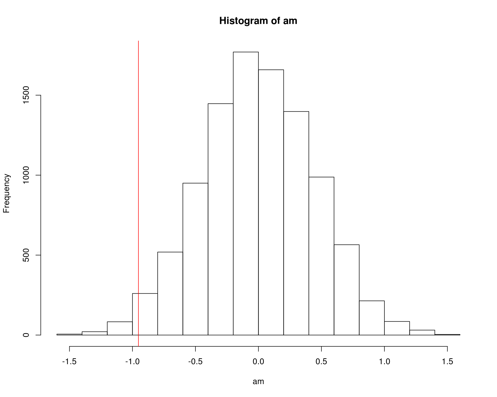
sum(am <= med.amostral)/N
# [1] 0.0156
sum(am < med.amostral)/N
# [1] 0.0156
## Padroniza a distribuição das propoções amostrais
tt <- (am - mu0)/(s.pond * sqrt(1/n1 + 1/n2))
hist(tt, freq = FALSE)
abline(v = tcalc, col = 2)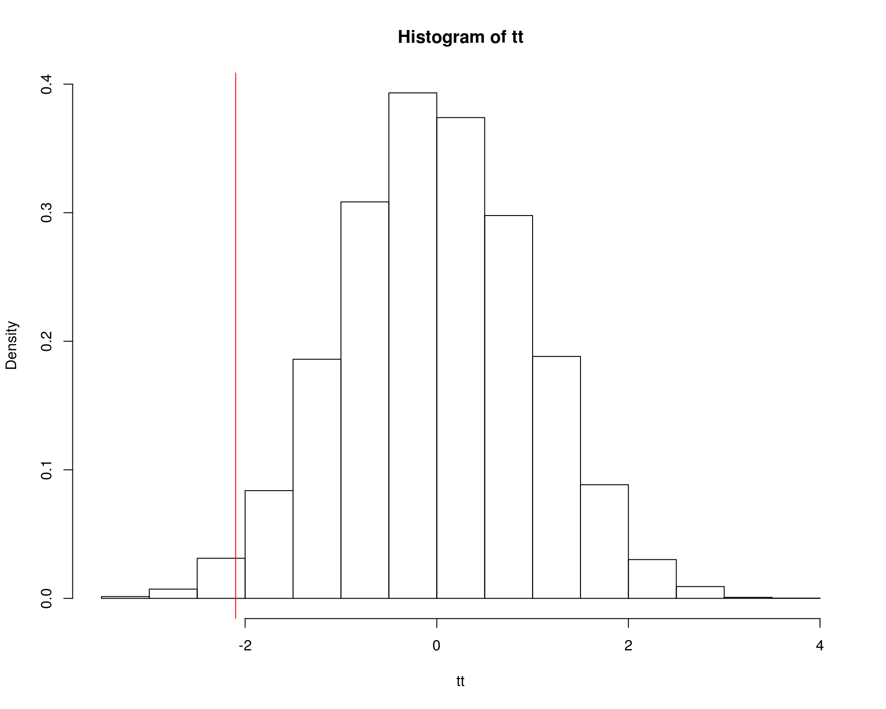
1.3 Proporção
## Lançamento de uma moeda.
## x <- scan()
## dput(x)
## Laçamento da moeda pelo Leonardo.
x <- c(1, 0, 0, 0, 0, 1, 1, 0, 0, 0, 1, 1, 1, 0, 0, 1, 0, 0, 0, 0,
0, 1, 1, 1, 0, 1, 1, 0, 1, 1, 0, 0, 1, 1, 1, 1, 0, 0, 0, 0, 1,
1, 0, 1, 0, 0, 0, 0, 0, 0, 1, 1, 1, 0, 0, 0, 1, 1, 1, 1, 1, 0,
0, 1, 0, 1, 1, 0, 0, 0)
## Proporção amostral.
sum(x)/length(x)
# [1] 0.4571429
## Número de trocas de face.
o <- sum(abs(diff(x))); o
# [1] 27
## Laçamento de uma moeda verdadeira (p=0.5, lanç indep = sem memória)
sample(0:1, 70, replace=TRUE)
# [1] 1 0 0 1 1 1 0 1 1 1 1 0 0 0 1 1 0 1 0 0 0 1 0 1 0 0 1 1 1 1 0 0 0 0 1
# [36] 1 1 0 1 0 1 0 0 0 1 0 0 0 0 1 1 1 0 1 1 1 1 0 1 1 1 1 0 0 0 1 1 0 1 1
sum(abs(diff(sample(0:1, 70, replace=TRUE))))
# [1] 30
## Função que lança uma moeda verdadeira e retorna o número de
## trocas. Ela reproduz o experimento sob a hipótese nula, ou seja, com
## p=0.5 e lançamentos independentes (sem memória).
moeda <- function(n){
## sum(abs(diff(rbinom(n, 1, 0.5))))
sum(abs(diff(sample(0:1, n, replace=TRUE))))
}
moeda(70)
# [1] 37
## Faz várias execuções do experimento aleatório.
r <- replicate(100000, moeda(70))
## A distribuição amostral da estatística número de trocas.
hist(r, breaks=seq(min(r), max(r)+1, by=1)-0.5, prob=TRUE,
xlab="Número de trocas em 70 lançamentos",
ylab="Densidade", main=NULL)
abline(v=o, col=2)
text(x=o, y=par()$usr[4], label="Estatística observada", srt=90,
adj=c(1.25,-0.25))
plot(ecdf(r))
abline(v=o, col=2)
text(x=o, y=par()$usr[4], label="Estatística observada", srt=90,
adj=c(1.25,-0.25))
## Como a v.a. é discreta.
sum(r<=o)/length(r)
# [1] 0.04623
sum(r<o)/length(r)
# [1] 0.0273
pbinom(o, 70, prob = 0.5)
# [1] 0.03611896
prop.test(x = 27, n = 70, alternative = "less")
#
# 1-sample proportions test with continuity correction
#
# data: 27 out of 70, null probability 0.5
# X-squared = 3.2143, df = 1, p-value = 0.0365
# alternative hypothesis: true p is less than 0.5
# 95 percent confidence interval:
# 0.0000000 0.4911405
# sample estimates:
# p
# 0.3857143
binom.test(x = 27, n = 70, alternative = "less")
#
# Exact binomial test
#
# data: 27 and 70
# number of successes = 27, number of trials = 70, p-value = 0.03612
# alternative hypothesis: true probability of success is less than 0.5
# 95 percent confidence interval:
# 0.000000 0.490866
# sample estimates:
# probability of success
# 0.3857143
2 * sum(r<=o)/length(r)
# [1] 0.09246
2 * sum(r<o)/length(r)
# [1] 0.0546
prop.test(x = 27, n = 70, alternative = "two.sided")
#
# 1-sample proportions test with continuity correction
#
# data: 27 out of 70, null probability 0.5
# X-squared = 3.2143, df = 1, p-value = 0.073
# alternative hypothesis: true p is not equal to 0.5
# 95 percent confidence interval:
# 0.2740797 0.5099641
# sample estimates:
# p
# 0.3857143
binom.test(x = 27, n = 70, alternative = "two.sided")
#
# Exact binomial test
#
# data: 27 and 70
# number of successes = 27, number of trials = 70, p-value = 0.07224
# alternative hypothesis: true probability of success is not equal to 0.5
# 95 percent confidence interval:
# 0.2717200 0.5097006
# sample estimates:
# probability of success
# 0.3857143
## A distribuição do número de trocas sob H0 é uma Binomial.
i <- 0:69
p <- pbinom(i, size=69, p=0.5)
plot(ecdf(r), verticals=TRUE, cex=NA, main=NULL,
xlab="Número de trocas em 70 lançamentos",
ylab="Probabilidade acumulada")
lines(p~i, type="s", col=2)
legend("right",
legend=c("Distribuição empírica", "Distribuição teórica"),
col=1:2, lty=1, bty="n")

Este conteúdo está disponível por meio da Licença Creative Commons 4.0